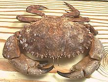

A heavy, hard shelled bottom crab with a bad disposition and claws so strong they can pinch right through heavy neoprene gloves. They live in rocky areas along the Pacific coast of North America from Alaska to Baja and can grow to nearly 8 inches wide across the carapace. The photo specimen was a male 6 inches across and weighing 1# 13oz (1.8 pounds).
This crab is not to be confused with the very common Atlantic rock crab (Cancer irroratus) which is much smaller and lighter of build or the small, fast moving Australian red rock crab Plagusia chabrus.
More on Crabs.
This crab has tender flesh with good crab flavor. It's best as an "eat from the shell" crab because the flakey flesh is a bit difficult to remove. Serve it in halves as shown below.
Yield is very low with a 1 pound crab yielding 2.6 ounces of crab meat (16%) but that's better than some other crabs. The claws and claw arms yielded 1.3 ounces and the rest of the crab 1.3 ounces. About 1/2 the claw arm flesh was in the claw itself.
Some people just boil the crabs whole but I prefer to clean them before cooking to minimize tainting the body flesh. With a little practice cleaning goes quickly.
| 1 |  | Sedate your crabs - they are not going to be at all cooperative otherwise. The claws of this crab are extremely powerful and you don't want to get pinched. Sedate them by giving them a good long soak in a tub of ice water (with plenty of ice). They'll still be moving but very sluggish and won't be able to pinch. Being sedated also makes the following step easier on the crab. |
| 2 | With the crab on its back place a strong kitchen knife down the centerline and hit it with a soft faced mallet to drive it into the crab. This will kill the crab, not instantly but very quickly. If you want the shell intact for stuffing or some other use, make sure the point of the blade doesn't project much over the front edge of the crab and don't pound too hard. The knife should go about half way through. If needed, finish the cut after removing the apron. | |
| 3 | Turn the crab over, bend back the apron and snap it off. The apron of a female crab will be wide as shown in the photo, the apron of a male will be very narrow and pointy. Finish splitting the crab if needed.. | |
| 4 | With a butter knife, insert in the crack under the claw joint and pry up each half of the split chassis to free it from the shell. Bend the shell back to completely free the chassis. Most of the gooky stuff will stay with the shell. | |
| 5 | Pull off the gills (known as "dead man's fingers") and wash under running water - anything with any color needs to be removed from the inside. A chopstick can help you get stuff out of the cavities leaving only translucent white flesh. Use kitchen shears to cut away any extraneous pieces of shell. | |
| 6 |
| You now have a completely cleaned crab chassis in two halves, with legs and claws attached to each half - all ready to cook by whatever means you please. |